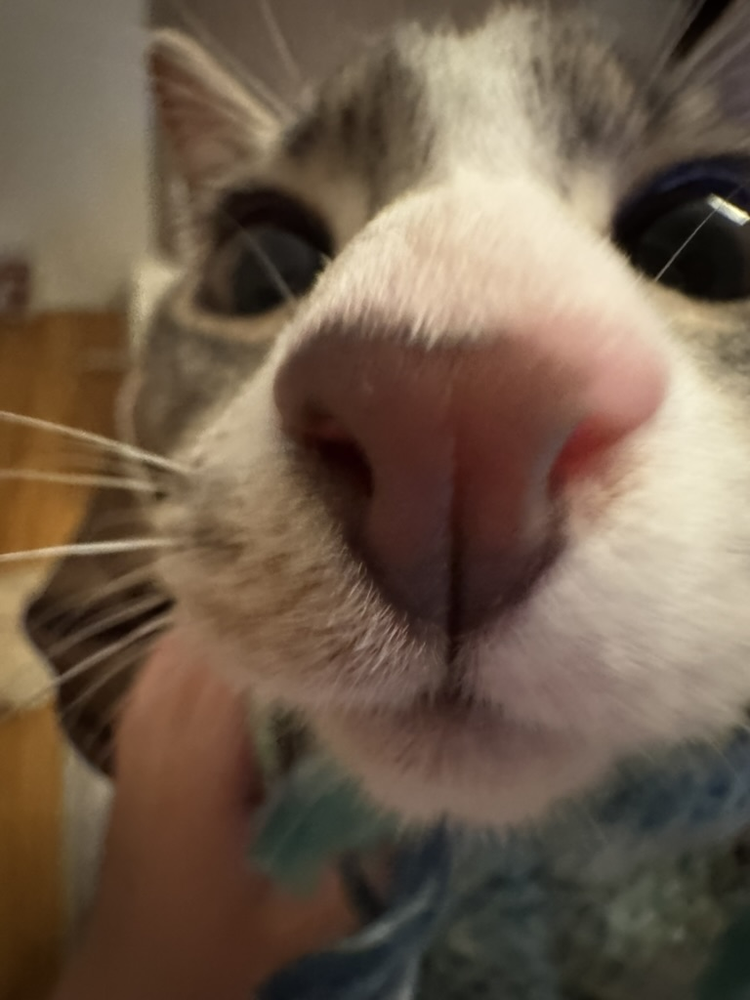

Nora's Mediated Expression Studio Work Index
Introduction Exercise
Hi! My name is Yingqi Liang, you can just simply call me Nora (she/her) >.< I came from China, and I came to Melbourne about 2 years ago.
I chose Digital Media because I want to explore broader areas of the digital world, and this major provides a platform for me to achieve that goal.
I can't tell what my exact favourite emoji is, but I can say I'm addicted to funny animal memes these days.
Procreate is the expressive software I feel most comfortable with, because my starting point in the design field was hand painting. Therefore, using an Apple Pencil to draw is within my comfort zone. I usually use this software to create 2D drawings and frame-by-frame animations.
I don't have much prior experience with coding, although I learned C++ in year 7 for about 3 months. (My mom sent me to a coding class at that age just because learning coding was a popular trend around secondary schools in China) Honestly, I can't remember anything about it. However, through last years' studio experience, I gained foundational knowledge of HTML and CSS.
